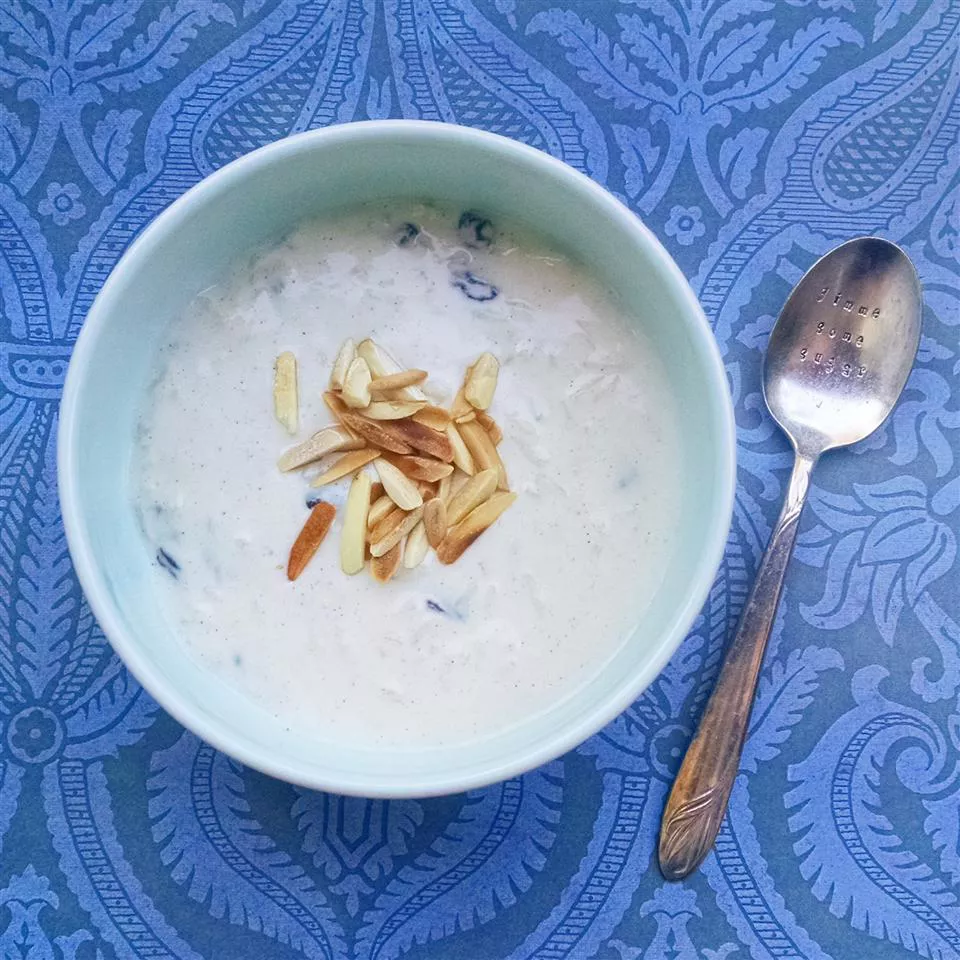

Kheer (Rice Pudding)
Ingredients
- 2 cups coconut milk
- 2 cups milk
- 3 tablespoons white sugar
- ½ cup Basmati rice
- ¼ cup raisins
- ½ teaspoon ground cardamom
- ½ teaspoon rose water (Optional)
- ¼ cup sliced almonds, toasted
- ¼ cup chopped pistachio nuts
Directions
- Step1: Bring the coconut milk, milk and sugar to a boil in a large saucepan. Add Basmati
rice,
and simmer over low heat until the mixture thickens and the rice is tender, about 20
minutes.
- Step2: Stir in the raisins, cardamom and rose water, and cook for a few more minutes. Ladle
into serving bowls, and garnish with almonds and pistachios.